About MCTS
The Monte Carlo Tree Search (MCTS) algorithm is widely used in game-playing and decision-making domains. The algorithm finds the best possible move in the game by searching through the game tree and expanding the game tree by using random rollouts. In the beginning, when the algorithm is initialised, all the relevant information about the current game state is stored in the node. This node is called the root node. The information stored in this node includes data such as player positions, whose turn is to make a move, what moves are available, game status, etc. Using the current game state, it then finds all the possible moves and each possible move is added as a child node of the current game state. After adding the child node, the MCTS algorithm uses random playouts to simulate gameplay till the end to find the score and visit count of the position. This information is used to weigh the nodes. The node with a good score will most likely be chosen for future playouts. This method is repeated until the specified iteration or time limit is reached. However, the iteration or time limits can vary depending on the computational resources.
Principle of Operation
The Monte Carlo Tree Search consists of 4 phases which are explained below:
- Selection
- Expansion
- Simulation
- Backpropagation
In this phase, we start from the Root Node, i.e., the node where the initial or current game state is stored. We select appropriate child nodes from the root node until a leaf node is reached. To select a child node, we use a technique called Exploration and Exploitation, which helps maintain the balance between the exploring nodes with a few visits and choosing the nodes with a high win rate. According to Kocsis and Szepesvari, it is recommended to use the Upper Confidence Bound formula for the exploration and exploitation of nodes within the game tree. The Upper Confidence Bound formula is represented below:
\[ \frac{W_i}{n_i} + c\sqrt{\frac{\ln N_i}{n_i}} \]
Here,
Wi = number of wins of the ith
node.
ni = number of visits of the ith
node.
Ni = number of visits of the parent node of the ith
node.
c
= Exploitation parameter, i.e., \( \sqrt{2} \), but it can be varied accordingly.
The selected leaf node is then checked to see if it's a terminal node or not. If it's not a terminal node, then we find all the available moves at that particular game state and add each available move as a child node of that particular leaf node. Here we can add one available move per iteration as the child node. This newly added child node is chosen randomly for the simulation phase. If the node is terminal, then return the node without performing any expansion.
Using the selected child node, we perform a roll-out, i.e., we simulate gameplay by selecting a random move from the available moves for each player until the game has ended. At the end of the game, we check if the player has won, lost or if the game is draw and update the score accordingly.
The score from the simulation phase and the visit count of the child node selected in the expansion phase is then updated, starting from the child node to the root node. Here the visit count is incremented by 1 for each visit of the child node.
By performing all 4 phases over the required iteration or time limit, we build the game tree and improve our search tree by finding the most promising moves. The above-mentioned method is implemented in Python. Here, during the playout, we increase the score by '1' if the game is won, the score is incremented by '0.5' if the game is draw, and the score is decreased by '1' if the game is lost.
Use Cases for MCTS Visualiser
Here are the list of all the features present in the Visualiser
Identification of best move
The following table shows the Tic Tac Toe game board with position numbers.
| 1 | 2 | 3 |
| 4 | 5 | 6 |
| 7 | 8 | 9 |
The Tic Tac Toe game of board size 3x3 has nine positions, illustrated in figure 1. At the beginning of the game, all the nine positions are empty. Here, we try to identify which position is most likely to win. The possible winning state for each position is given in Table.
| Positions Occupied | Possible Win States |
|---|---|
| 1 | (1, 2, 3), (1, 4, 7), (1, 5, 9) |
| 2 | (1, 2, 3), (2, 5, 8) |
| 3 | (1, 2, 3), (3, 6, 9), (3, 5, 7) |
| 4 | (4, 5, 6), (1, 4, 7) |
| 5 | (1, 5, 9), (2, 5, 8), (3, 5, 7), (4, 5, 6) |
| 6 | (3, 6, 9), (4, 5, 6) |
| 7 | (1, 4, 7), (3, 5, 7), (7, 8, 9) |
| 8 | (2, 5, 8), (7, 8, 9) |
| 9 | (1, 5, 9), (3, 6, 9), (7, 8, 9) |
From the table, it can be observed that position 5, i.e., the centre position has the high number of possible states to win. Hence, the MCTS should be able to identify this position. The MCTS Visualiser has run 1000 iterations on an empty 3x3 board. After 1000 iterations, it has found that the best move was the centre position and the minimum number of iterations it took to identify the centre position as the best move was 508. This information can be observed in image below.
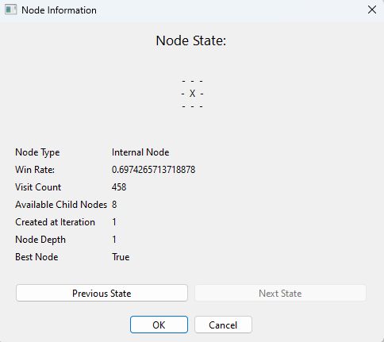View the best path in the game tree
The MCTS Visualiser allows the user to see the best path in the entire game tree by representing all the best nodes using orange colour, starting from the root node to the end, as shown in figure below. This allows the user to quickly view information about the best possible moves taken by the MCTS algorithm.
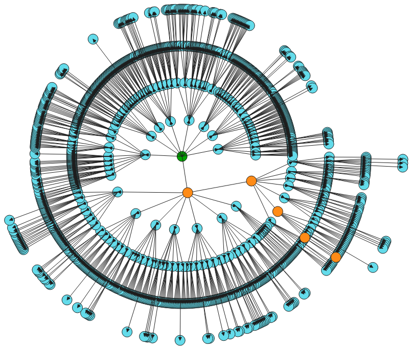Flexible use of iteration limit and time limit
The MCTS Visualiser allows users to switch between Iteration Limit and Time Limit dynamically. This feature, demonstrated in the following images, allows users to analyse the impact of different constraints on the game state. Users can better understand the algorithm's behavior, refine the algorithm, game heuristics, and make informed decisions. The Iteration Limit restricts the number of iterations before selecting a move, ensuring consistency. In contrast, the Time Limit allows as many iterations as possible within a specified time, sacrificing consistency but accommodating varying states to explore during the game. Although the Time Limit may result in longer processing times, it proves useful for real-world applications like pathfinding or optimising game moves. The MCTS Visualiser enables users to choose between Time Limit and Iteration Limit based on responsiveness requirements and available computational resources.
| 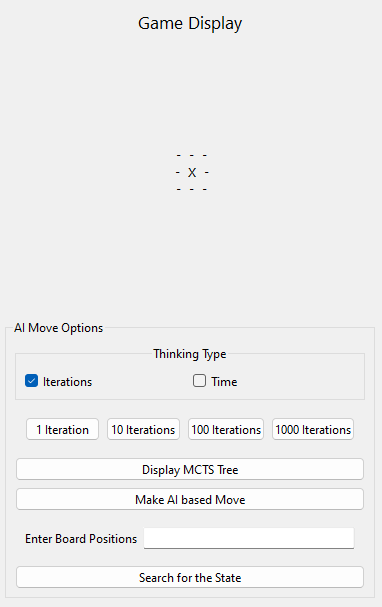 | 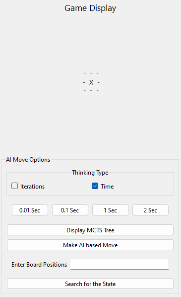 |
Flexibility to build the game tree from the required state
The MCTS Visualiser offers a crucial feature that allows users to build the game tree from a specific game state, providing flexibility in addressing challenges encountered during the initial stages of algorithm development. In these early stages, the MCTS algorithm may exhibit poor performance or unexpected behavior, such as selecting suboptimal nodes from the game tree. Several factors, including faulty implementation in different algorithm phases and game heuristics, can contribute to these issues.
To resolve them, users need to debug and identify the underlying causes. The flexibility of building the game tree from a specific state enables users to pinpoint and address these issues efficiently. It allows users to isolate the problematic states where the algorithm fails to make optimal decisions, facilitating targeted troubleshooting. Additionally, users can test the effects of iteration and time constraints from a specific state by quickly generating the game tree, rather than gradually constructing it from the beginning. This capability empowers users to fine-tune their algorithm better to suit the requirements of the problem at hand. The functionality of building the game tree from a required state can be observed in following images of the MCTS Visualiser.
| 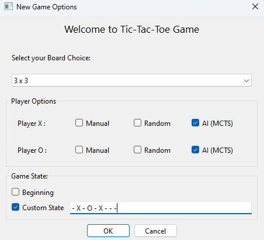 | 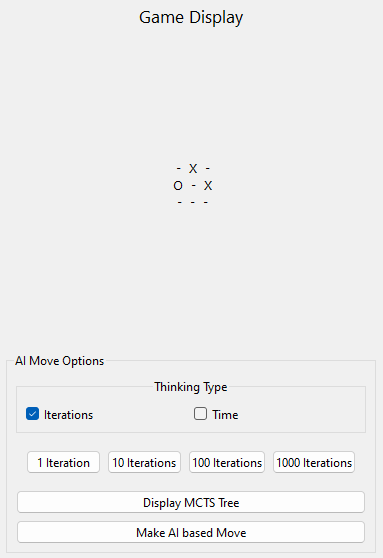 |
Understand the expansion of various nodes in the game tree
The MCTS Algorithm's construction of the game tree involves exploring more nodes and creating new nodes, which can be observed using the MCTS Visualiser. Each node in the game tree represents a specific game state and its potential outcomes. The visualiser utilizes the Radial Tree Diagram layout to display all the nodes in the game tree. This layout positions the root node at the center, with child nodes expanding in different directions. Consequently, users can effortlessly view all the nodes in the game tree without manually expanding states. The MCTS Visualiser provides insights into node creation and their connections to the root node. Users can trace the path from the root node to a particular node, facilitating exploration of different possibilities and identification of patterns. This information can be utilized to fine-tune the algorithm according to specific requirements. The Radial Tree Diagram layout used by the MCTS Visualiser can be observed in the below image.
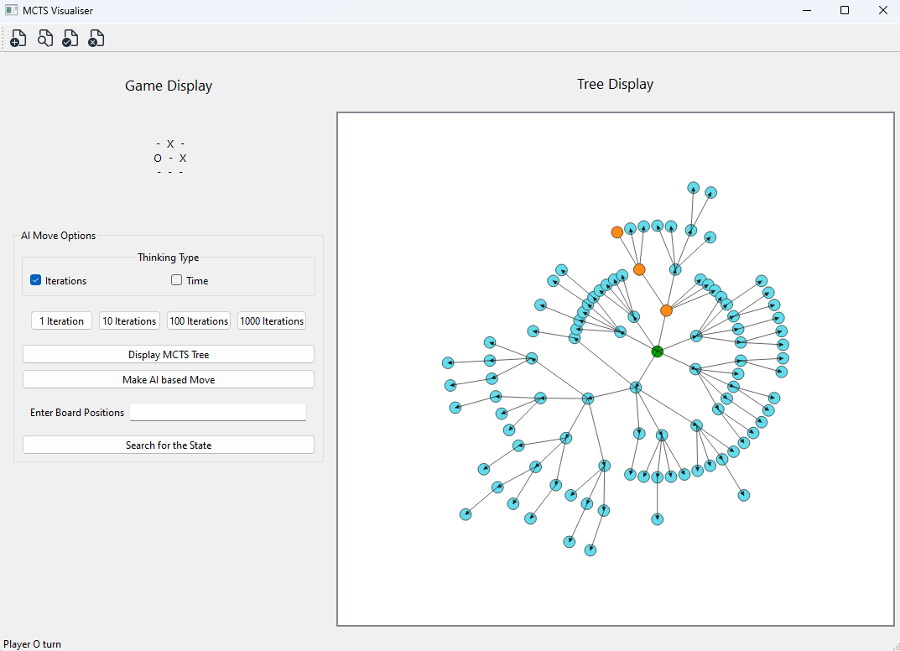Extract information of any node in the game tree
The MCTS Visualiser allows the user to extract the following information from any node that is available in the game tree such as the following:
-
Node Type:
It represents whether the node is a root, internal, leaf, or terminal node. -
Win Rate:
The Win rate of the node is calculated by using the Upper Confidence Bound applied to Trees (UCT). -
Visit Count:
The visit count displays the number of times the node has been visited while building the game tree using the MCTS Algorithm. -
Available Child Nodes:
It shows the number of child nodes available for the selected node. -
Created at Iteration:
It represents the number of iterations required for the MCTS to reach the selected node state. -
Node Depth:
It displays the depth of the node starting from the root node. -
Best Node:
If the node is found to be the best node, it displays True. Else, it is hidden. -
Previous State:
Every node in the game tree has a pth which starts from the root node and ends at the selected node. The previous state allows the user to go one step back in the path and view it's information. The user can go back until the root node is reached. -
Next State:
This allows the user to go one step forward in the path and view it's information. The user can go forward until the selected node state is reached.
Extracting the information from the node, as shown in figures below can provide insights for the node selection, node expansion, and identify patterns. Overall, it allows the user to understand the exploration and building of the game tree.
| 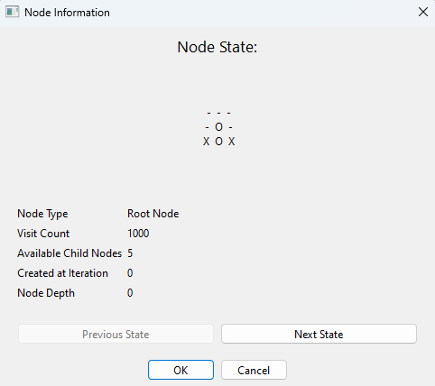 |
Search for the required game state
The MCTS Visualiser allows the user to visualise the game tree, and then it provides a feature to search for the particular game state from the game tree. This can be seen in following images. When the user provides the required game state, the MCTS Visualiser searches through all nodes available in the Game tree and then displays the information of the node with the same game state. It eliminates the need for manual exploration of the game tree. This helps the user quickly compare the node information and find the possible paths to reach the required state, which can be further used to fine-tune the algorithm.
| 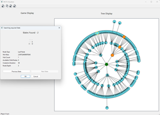 |
Flexibility to choose between building the game tree or making a move
Unlike MCTS algorithms that lack graphical user interfaces (GUI), many algorithms rely on specific time or iteration limits. These algorithms iterate, select the best move, and repeat until the game ends. However, validating the accuracy of node selection, determining the optimal time or iteration limits, and fine-tuning constraints for specific game states can be challenging. The MCTS Visualiser addresses these challenges by allowing users to perform iterations using time or iteration limits and build the game tree. Users can then validate node information, make moves, and rebuild the tree with the same or different constraints. This feature enables fine-tuning of iteration or time limits for specific game states, validating node selection accuracy, and optimising computational resource usage. The following image showcases this feature. 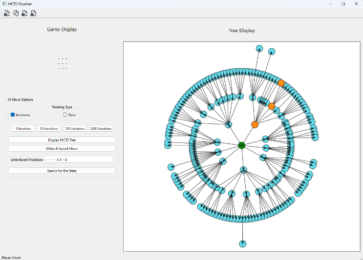Compete against a human player
The MCTS Visualiser can be used to play against the human player. In this case, one human player, Player X, can directly input the moves. Player O can use the MCTS to input their moves based on the game built by MCTS. During the gameplay, player O can use the MCTS algorithm to build the game tree, analyse it and make the best possible move. It also allows the player to fine-tune their algorithm to improve their performance in real-world scenarios. Using this approach, the user can fine-tune their MCTS algorithm much more quickly, allowing it to make decisions intelligently like a human. It can also help the user to identify the weak areas of the algorithm and improve them.
Save and load application state
Most of the MCTS Algorithms developed require the user to run the iterations and make their analysis before they can proceed to other works. This is because the MCTS algorithm uses tree data structure to build it’s game tree which makes it difficult for the user to store this information and use this information at a later point. Due to this, most developers have to spend lots of time running the algorithm and then performing the analysis without any breaks. It also prevents the user from sharing the existing game tree of the MCTS, making collaboration difficult with others. The MCTS Visualiser overcomes this challenge by allowing the user to store the state of their Application state, and at a later point of time, the user can load their stored application state. This allows the user to continue their work without starting it from the beginning. The store application state can also be shared with others using the same visualiser. This allows sharing the game tree developed by the MCTS algorithm, thus making collaboration with each other lot easier.This saving menu of the application state can be seen in following image.
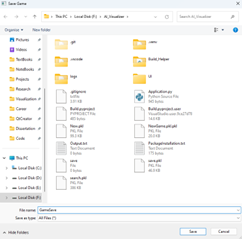The state of the application being save can be seen in the below image.
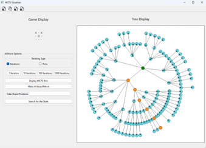The loading menu of the application can be seen in the image given below.
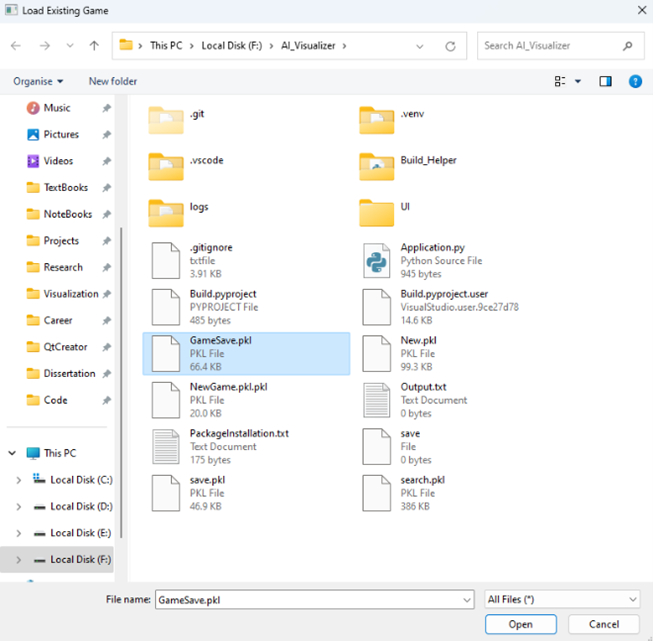The empty application state can be seen in the below image.
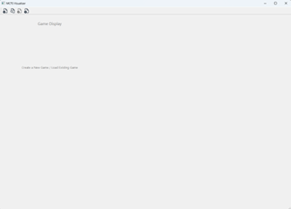The application state after loading the data can be seen in the following image.
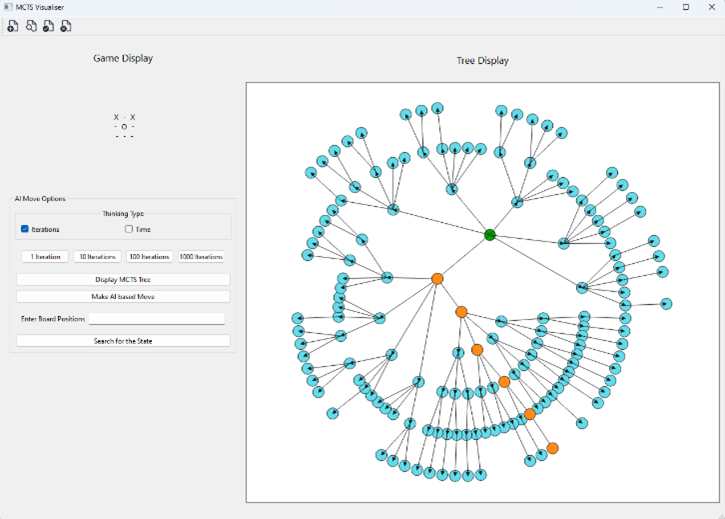